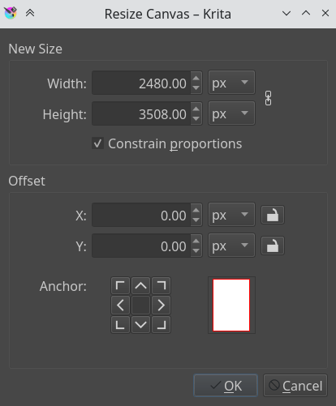
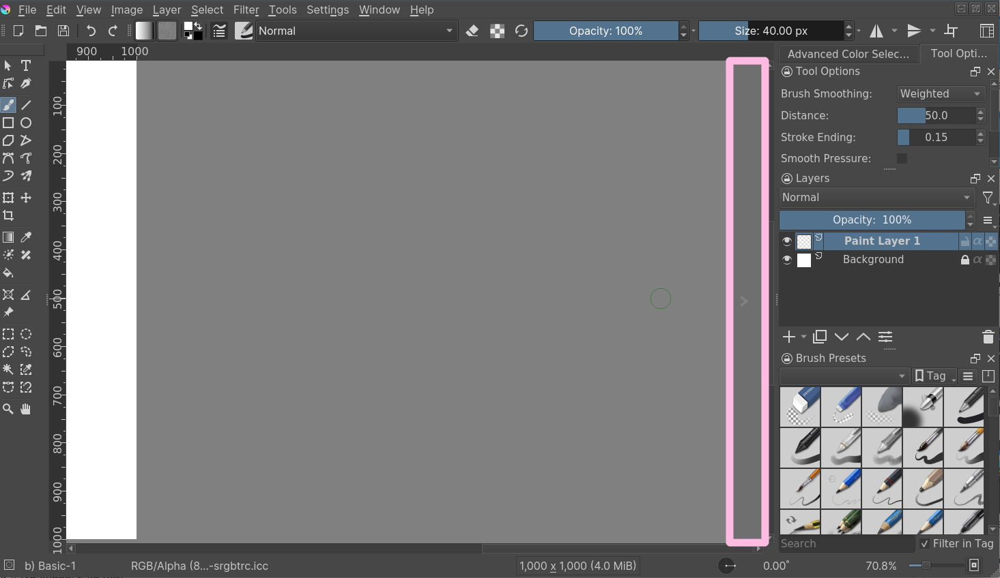
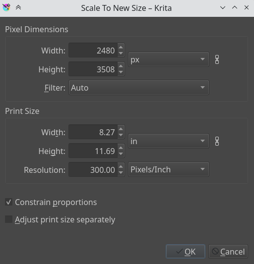
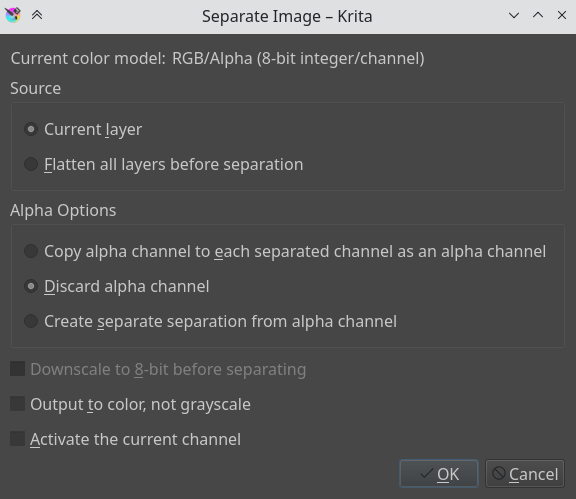

如何以影像工作¶
Computers work with files and as a painting program, Krita works with images as the type of file it creates and manipulates.
影像包含了甚麼？¶
If you have a text document, it of course contains letters, strung in the right order, so the computer loads them as coherent sentences.
點陣數據¶
This is the main data on the paint layers you make. So these are the strokes with the paint brush and look pixelated up close. A multi-layer file will contain several of such layers, that get overlaid on top of each other so make the final image.
A single layer file will usually only contain raster data.
向量數據¶
These are mathematical operations that tell the computer to draw pixels on a spot. This makes them much more scalable, because you just tell the operation to make the coordinates 4 times bigger to scale it up. Due to this vector data is much more editable, lighter, but at the same time it's also much more CPU intensive.
操作數據¶
Stuff like the filter layers, that tells Krita to change the colors of a layer, but also transparency masks, group layer and transformation masks are saved to multi-layer files. Being able to load these depend on the software that initially made the file. So Krita can load and save groups, transparency masks and layer effects from PSD, but not load or save transform masks.
中繼資料¶
Metadata is information like the creation date, author, description and also information like DPI.
影像尺寸¶
The image size is the dimension and resolution of the canvas. Image size has direct effect file size of the Krita document. The more pixels that need to be remembered and the higher the bit depth of the color, the heavier the resulting file will be.
DPI、PPI¶
DPI stands for Dots per Inch, PPI stands for Pixels per
Inch. In printing industry, suppose if your printer prints at 300
DPI. It means it is actually putting 300 dots of colors in an area
equal to an Inch. This means the number of pixels your artwork has in a
relative area of an inch.
DPI is the concern of the printer, and artists while creating
artwork should keep PPI in mind. According to the PPI you have
set, the printers can decide how large your image should be on a piece
of paper.
Some standards:
- 72 PPI
This is the default PPI of monitors as assumed by all programs. It is not fully correct, as most monitors these days have 125 PPI or even 300 PPI for the retina devices. Nonetheless, when making an image for computer consumption, this is the default.
- 120 PPI
This is often used as a standard for low-quality posters.
- 300 PPI
This is the minimum you should use for quality prints.
- 600 PPI
The quality used for line art for comics.
色彩深度¶
We went over color depth in the Color Management page. What you need to understand is that Krita has image color spaces, and layer color spaces, the latter which can save memory if used right. For example, having a line art layer in grayscale can half the memory costs.
影像色彩空間、圖曾色彩空間以及其轉換操作¶
Because there's a difference between image color space and layer color space, you can change only the image color space in which will leave the layers alone. But if you want to change the color space of the file including all the layers you can do it by going to this will convert all the layers color space as well.
作者與描述說明¶

Krita will automatically save who created the image into your image's
metadata. Along with the other data such as time and date of creation
and modification, Krita also shows editing time of a document in the
document information dialog, useful for professional illustrators,
speed-painters to keep track of the time they worked on artwork for
billing purposes. It detects when you haven’t performed actions for a
while, and has a precision of ±60 seconds. You can empty it in the
document info dialog and of course by unzipping you .kra file and
editing the metadata there.
These things can be edited in , and for the author's information . Profiles can be switched under .
設定畫布背景色¶
You can set the canvas background color via menu item. This allows you to turn the background color non-transparent and to change the color. This is also useful for certain file formats which force a background color instead of transparency. PNG and JPG export use this color as the default color to fill in transparency if you do not want to export transparency.
If you come in from a program like Paint Tool SAI, then using this option, or using As canvas color radio button at Background: section in the new file options, will allow you to work in a slightly more comfortable environment, where transparency isn't depicted with checkered boxes.
基本變形¶
There are some basic transforms available in the Image menu.
- Shear Image...
This will allow you to skew the whole image and its layers.
- Rotate
This show a submenu that will allow you to rotate the image and all its layers quickly.
- Mirror Image Horizontally/Vertically
This will allow you to mirror the whole image with all its layers.
But there are more options than that...
裁切及調整畫布大小¶
You can crop and image with the 裁切工具, to cut away extra space and improve the composition.
修剪¶
Using , Krita resizes the image to the dimensions of the layer selected. Useful for when you paste a too large image into the layer and want to resize the canvas to the extent of this layer.
is a faster cousin to the crop tool. This helps us to resize the canvas to the dimension of any active selection. This is especially useful with right-clicking the layer on the layer stack and choosing Select Opaque. will then crop the canvas to the selection bounding box.
is actually for layers, and will trim all layers to the size of the image, making your files lighter by getting rid of invisible data.
調整畫布大小¶
You can also resize the canvas via (or the Ctrl + Alt + C shortcut). The dialog box is shown below.
In this, Constrain proportions checkbox will make sure the height and width stay in proportion to each other as you change them. Offset indicates where the new canvas space is added around the current image. You basically decide where the current image goes (if you press the left-button, it'll go to the center left, and the new canvas space will be added to the right of the image).
Another way to resize the canvas according to the need while drawing is when you scroll away from the end of the canvas, you can see a strip with an arrow appear. Clicking this will extend the canvas in that direction. You can see the arrow marked in red in the example below:
{kind=link}
調整影像大小¶
Scale Image to New Size... allows you to resize the whole image. Also, importantly, this is where you can change the resolution or upres your image. So for instance, if you were initially working at 72 PPI to block in large shapes and colors, images, etc... And now you want to really get in and do some detail work at 300 or 400 PPI this is where you would make the change.
Like all other dialogs where a chain link appears, when the chain is linked the aspect ratio is maintained. To disconnect the chain, just click on the link and the two halves will separate.
分離影像¶
This powerful image manipulation feature lets you separate an image into its different components or channels.
This is useful for people working in print, or people manipulating game textures. There's no combine functionality, but what you can do, if using colored output, is to set two of the channels to the addition 混色模式.
For grayscale images in the RGB space, you can use the Copy Red, Copy Green and Copy Blue blending modes, with using the red one for the red channel image, etc.
儲存、匯出與開啟檔案¶
When Krita creates or opens a file, it has a copy of the file in memory, that it edits. This is part of the way how computers work: They make a copy of their file in the RAM. Thus, when saving, Krita takes its copy and copies it over the existing file. There's a couple of tricks you can do with saving.
- 儲存
Krita saves the current image in its memory to a defined place on the hard-drive. If the image hadn't been saved before, Krita will ask you where to save it.
- 另存為…
Make a copy of your current file by saving it with a different name. Krita will switch to the newly made file as its active document.
- 開啟…
Open a saved file. Fairly straightforward.
- 匯出…
Save a file to a new location without actively opening it. Useful for when you are working on a layered file, but only need to save a flattened version of it to a certain location.
- 將現存檔案作為無標題檔案開啟…
This is a bit of an odd one, but it opens a file, and forgets where you saved it to, so that when pressing 'save' it asks you where to save it. This is also called 'import' in other programs.
- 從目前影像建立副本
Makes a new copy of the current image. Similar to , but then with already opened files.
- 儲存增量版本
Saves the current image as
filename_XXX.kraand switches the current document to it.- 儲存增量備份
Copies and renames the last saved version of your file to a backup file and saves your document under the original name.
備註
Since Krita's file format is compressed data file, in case of a corrupt or broken file you can open it with archive managers and extract the contents of the layers. This will help you to recover as much as possible data from the file. On Windows, you will need to rename it to filename.zip to open it.